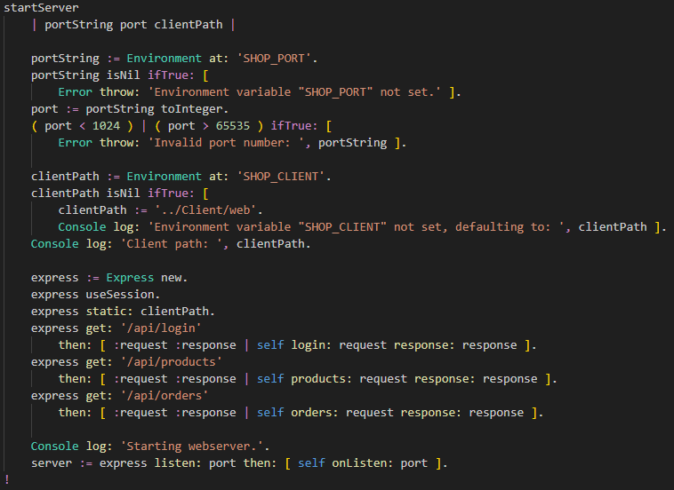

In the file
src/ShopServer.st , scroll down to the method
startServer .
It should look like this:

First the server port number and the path to the client HTML files are read from the environment.
Then a new Express server instance is created.
(This class is based on the popular npm package Express.js)
The important method
useSession is called on the server,
that allows login sessions to be separated with users not seeing each other's data.
The call
express static: clientPath tells Express where the static HTML files are.
Now the API calls for login, products and orders are routed to methods in our server app.
Finally the server is started with a callback after succesful start.